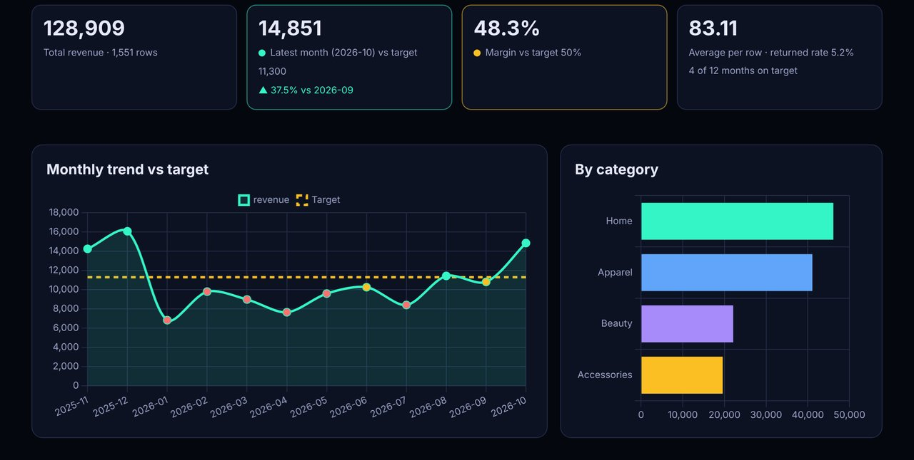

Demo build, no client
Drop your CSV, get a KPI dashboard: private, in-browser reporting
Problem
Small businesses keep their numbers in exports from Shopify, Stripe, accounting tools or spreadsheets. They want a weekly view of "are we on target?" without paying for a BI tool or uploading financial data to an unknown website. Many also have messy files, with semicolons, day-first dates and numbers like "1.250,00".
Build
- Parser: an RFC 4180-style CSV reader (quoted fields, escaped quotes, line breaks inside quotes, CRLF, BOM) that detects comma, semicolon, tab or pipe delimiters on its own.
- Column detection: finds date columns (ISO, US or day-first), number columns (currency symbols, thousands separators, European decimals, negatives in brackets), yes/no columns and category columns, then guesses a mapping that the user can change.
- Dashboard: four KPI cards (total, latest month against target, margin against target, average and rate), a monthly trend with a target line, breakdowns by two dimensions, a monthly table, and filters by month range and category.
- Targets: red, amber and green flags (100% or more of target is green, 90% or more is amber) that update as you type.
- Exports: a 4-sheet Excel file (Summary, Monthly, By category, Filtered rows) and a monthly CSV, both created in the browser.
- Privacy: the file is read with FileReader. The browser test confirms that zero network requests happen while a user's file is loaded.

Result (measured on 31 Oct 2026 (IST))
The browser checks load the 1,551-row sample (12 months, total revenue 128,909), apply filters and targets, export the Excel file and open it to confirm 4 sheets, then load a German-style test file (semicolons, day-first dates, "1.250,00") and confirm the totals and that no network request was made. Lighthouse measures the first screen of the live GitHub Pages URL. This is a demo, so there are no client results to report.
Stack
Plain JavaScript, with Chart.js 4 (MIT) for the charts and SheetJS Community Edition (Apache 2.0) to write the Excel file. SheetJS only loads when you export. The core logic (dash-core.js) runs in both the browser and Node. Hosted on GitHub Pages and tested with Puppeteer and Lighthouse.
For a client, the same logic can feed a Google Sheets plus Apps Script dashboard, a scheduled weekly email, or a hosted web dashboard reading straight from Shopify, Stripe or a database.